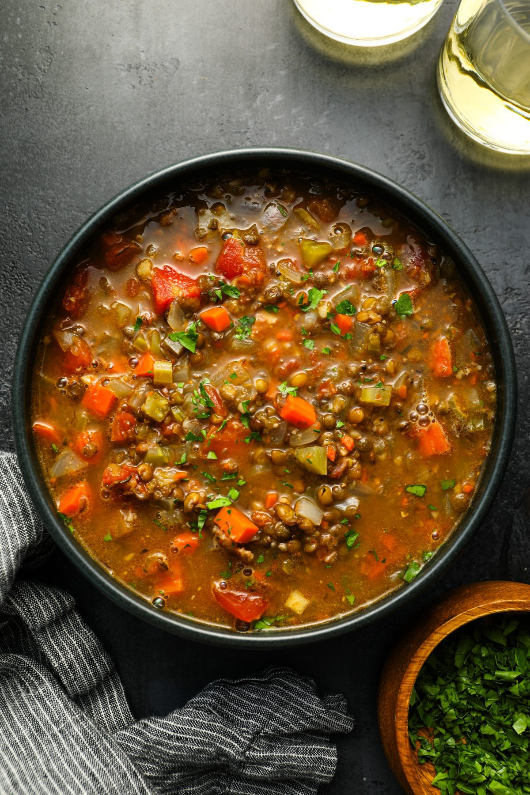

Lentil Soup

Description
Best and quickest lentil soup ever! A friend of mine gave me this recipe and it's now on of my rotation meals.
Ingredients
- 3 tbsp. olive oil
- 6 garlic cloves roughly chopped
- 1 medium onion minced
- 1 large carrot chopped
- 2 bay leaves
- 1 1/2 tbsp. tomato paste
- 1 1/2 tbsp. vegetable stock paste
- 1 tsp salt
- 1/2 tsp black pepper
- 2 cups of cooked lentils
- 6 cups of hot water
Steps
- In a pot, heat the olive oil and add the onions, garlic and carrot. Cook for 5 minutes.
- Add the bay leaves, tomato paste, vegetable stock paste, salt and pepper. Stir very well.
- Turn the heat to high and add the lentils and water and cook for 20 min, or until the carrots are tender.
- Done! You can serve with vinegar if you like it.